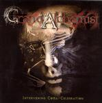

| Artist: | Grand Alchemist |
| Title: | Intervening Coma-Celebreation |
| Label: | Sound Riot Records SRP-17 |
| Length(s): | 47 minutes |
| Year(s) of release: | 2002 |
| Month of review: | [02/2003] |
Sample this album in MP3 or RealAudio
On Down Again, a piano dances amongst the violence, rather arbitrarily one might say. In fact, the music has the tendency to sound disjointed. Not because, the band changes its mind all the time in what tempo to play, but because many of the ingredients that happen in parallel seem to be somewhat unconnected. The melodies are generally quite nice, although admittedly they are more tunes than melodies (if you know what I mean?). An orgasm of sound we find on the next track with staccato guitars, lots of growling, mesmerizing keyboards, although I would have preferred them to cut down on the string like ones. A driven track this one, in which a lot is happening.
The title track is rather up-beat and dancable even. The vocals are rough. In the next one, the band seems to wear itself down. I guess it is mainly the thinness of the synth sound that makes me realize that notwithstanding the overall noise, their is a certain whispiness to it all.
On Psyche And A Flower To The New Lifetime, the sound is filmic and catchy, the piano punctuating the song. On the next one, I get interested when the second part sets in, here we have a fine melody and an epic view of the music with violin and cello. On the one hand, we have a train running off its tracks, on the other hand it has a certain lightfootedness. At times I am reminded of Rammstein here. During the next two tracks, the violence continues to conclude with an energetic closer in which there is also time to build on a bit of atmosphere.
On the whole, a rather aggressive album of gothic and dark wave. The tunes are okay, but the thinness of the keyboards keeps me distant. Also, the compositions could have been a bit more tight. The band does well on tracks where atmosphere seeps into the songs.